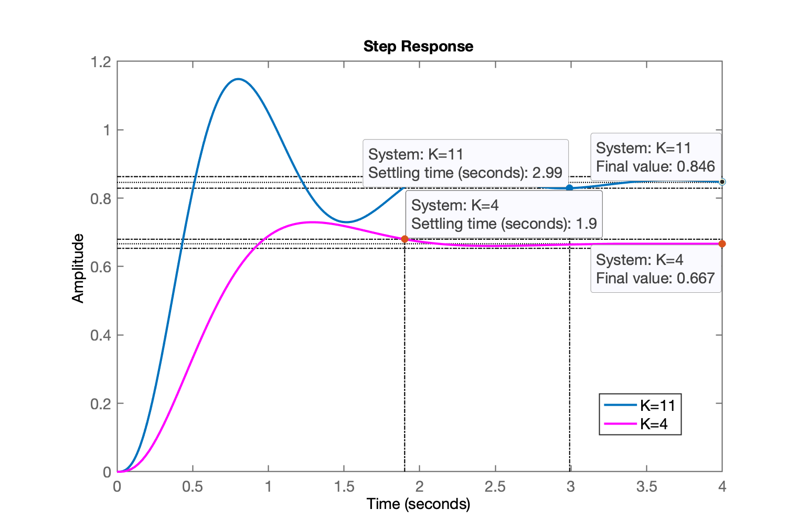
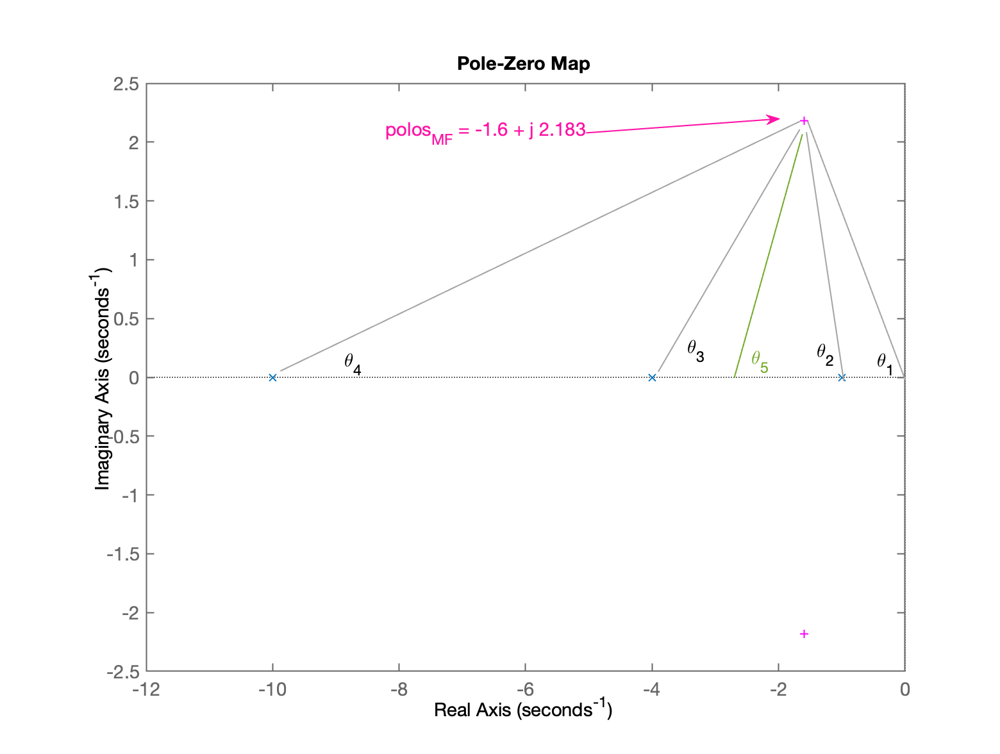
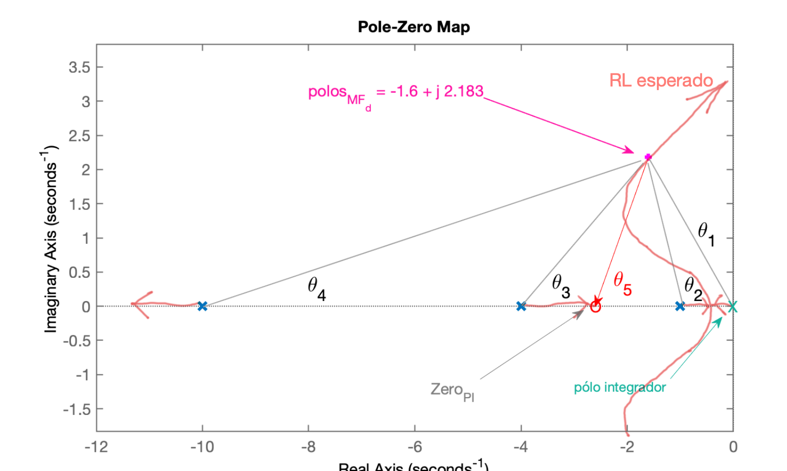
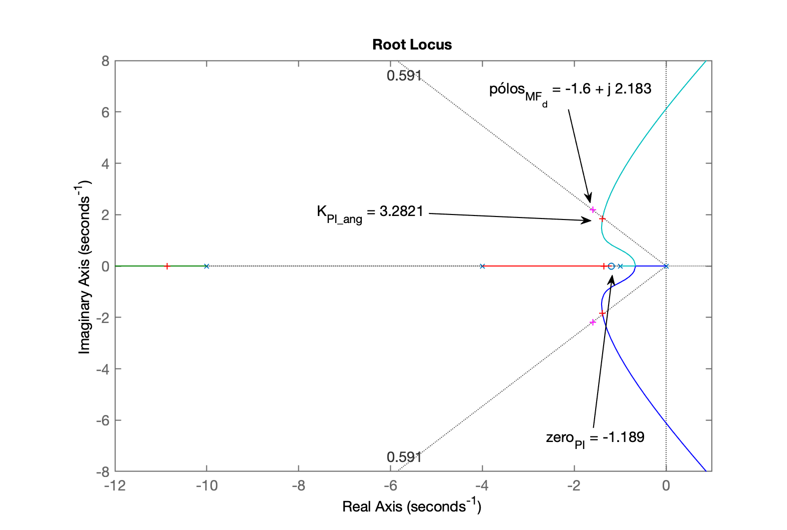
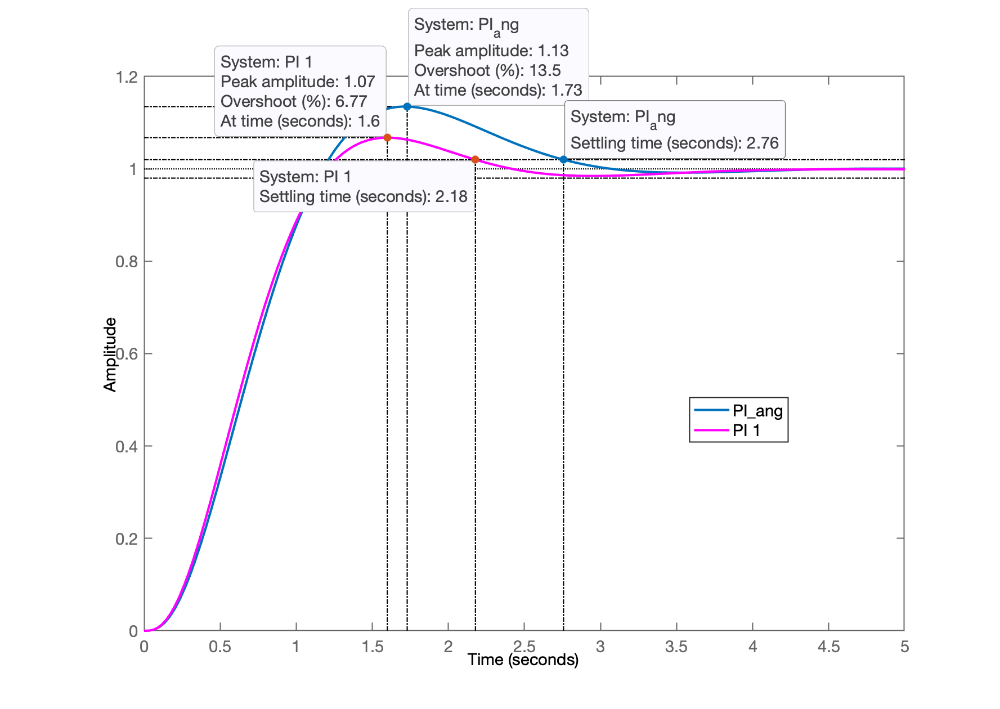

Aula de 23/09/2024. Continuação da aula de 16/09/2024. Faltou realizar projeto de PI usando "Contribuição Angular" -- para parte teórica, ver: Exemplo (Aula de 20/05/2020).
Recomeçando trabalhos da aula anterior:
xxxxxxxxxx>> load planta % lembrando da planta>> zpk(G) 20 ------------------ (s+10) (s+4) (s+1) Continuous-time zero/pole/gain model.Idéia: aumentar valor do ganho proporcional em relação aos projetos anteriores onde foram usandos e . O objetivo é encontrar um valor de tempo de assentamento razoável e factível para o projeto de um PI. Note que um PI nunca será tão rápido quanto um controlador proporcional. Mas o objetivo do PI é zerar o erro em regime permanente, o que não se obtêm através de um simples controlador proporcional.
No primeiro caso, foi determinado para satisfazer mas o Matlab determina o valor de em relação ao valor em regime permanente atingido pela saída da planta, que não corresponde ao valor desejado (de setup point; entrada degrau, onde o desejado seria: ). E no outro caso, com , foi obtido este valor de ganho para manter erro abaixo de 10% às custas de uma resposta bastante oscilatória (revisar aula de 16/09/2024 se for o caso, note que aumentou consideravelmente).
O ideal seria encontrar um valor de ganho que atendesse ao sobressinal máximo estipulado mas em relaçao á entrada degrau unitário (referência usada), o que significa: -- mas não queremos perder muito tentando encontrar este valor de ganho (mais tarde, aprenderemos a usar a ferramente gráfica: "Control System Designer" disponibilizada no Control Systems Toolbox do Matlab). Arbitrando um valor intermediário de ganho:
xxxxxxxxxx>> (18+4)/2 % simples média aritméticaans = 11>> K3=11; % expectativa de resposta não tão oscilatória>> ftmf_K3=feedback(K3*G, 1);>> figure; step(ftmf_K3, ftmf)>> legend('K=11', 'K=4')Comparando o desempenho de controladores proporcionais com ganho e .

O último gráfico permite inferir que um bom valor de para um PI seria: segundos.
Para rever equações para cálculo dos pólos complexos associados com Resposta de sistemas sub-amortecidos de segunda-ordem em malha-fechada, com certo e rever: Root_Locus_3a_parte_pt_2019_1.pdf.
Lembrando que:
Desta eq. consigue-se isolar o (em função de um especificado) e então calcular o parte imaginária do pólo complexo que caracteriza a resposta sub-amortecida:
Realizando os cálculos:
xxxxxxxxxx>> ts=2.5; % parece um valor tangível>> wn=4/(zeta*ts)wn = 2.7066>> numerador=-log(0.02*sqrt(1-zeta^2)) % considerando eq. mais precisa de t_snumerador = 4.127>> wd=wn*sqrt(1-zeta^2) % determinando parte imaginária dos pólos complexoswd = 2.183>> sigma=wn*zeta % calculando parte real dos pólos complexossigma = 1.6>> polos_MFd=[-sigma+i*wd -sigma-i*wd]polos_MFd = Column 1 -1.6 + 2.183i Column 2 -1.6 - 2.183iMostrando graficamento onde ficará localizado estes pólos de MF com a planta e controlador pretendido:
xxxxxxxxxx>> figure; pzmap(G)>> hold on>> plot(polos_MFd, 'm+')>> ylim([-2.5 2.5])Gráfico dos pólos no plano-s, mostrando esboço da contribuição angular para o RL esperado para este projeto:

Note que teremos um RL como:

Continuando com cálculos dos ângulos entre pólo complexo de MF por onde queremos que passe o RL e pólos e zeros existentes na deste sistema:
xxxxxxxxxx>> ylim([-0.5 2.5])>> % Calculando os ângulos>> th1=atan2(wd, -sigma) % gera angulo em radianosth1 = 2.2033>> th1_deg=th1*180/pi % valor em grausth1_deg = 126.24>> axis equal % se você quiser confirmar os graus com transferidor na tela do PC>> >> detal_x=sigma-1 % p/cálculo do \theta_2detal_x = 0.6>> th2=atan2(wd, -detal_x)th2 = 1.839>> th2_deg=th2*180/pith2_deg = 105.37>>>> delta_x= 4 - sigma % p/cálculo do theta_3delta_x = 2.4>> th3=atan2(wd, delta_x)th3 = 0.73809>> th3_deg=th3*180/pith3_deg = 42.289>>>> delta_x= 20 - sigma % p/cálculo do theta4delta_x = 18.4>> th4=atan2(wd, delta_x)th4 = 0.11809>> th4_deg=th4*180/pith4_deg = 6.766>>>> % Calculando soma dos ângulos dos pólos>> sum_th_polos=th1+th2+th3+th4 % em radianossum_th_polos = 4.8985>> sum_th_polos_deg=sum_th_polos*180/pi % valor em graussum_th_polos_deg = 280.66>> th_zero= -180 + sum_th_polos_deg % resultado em grausth_zero = 100.66>> th_zero= -pi/2 + sum_th_polos % resultado em radianosth_zero = 3.3277>> th_zero= -pi + sum_th_polos % resultado em radianosth_zero = 1.7569>> delta_x = wd/tan(th_zero) % delta_x para o zero do PIdelta_x = -0.411>> zero_PI = -(sigma + delta_x)zero_PI = -1.189>>>> % Determinando a `tf` deste PI>> PI_ang=tf( [1 -zero_PI], [1 0 ] )PI_ang = s + 1.189 --------- s Continuous-time transfer function.>> ftma_PI_ang=PI_ang*G;>> zpk(ftma_PI_ang) % apenas para verificaçãoans = 20 (s+1.189) -------------------- s (s+10) (s+4) (s+1) Continuous-time zero/pole/gain model.>> % Note que o zero do PI neste caso, caso cancelou o pólo mais lento da planta!>> figure; rlocus(ftma_PI_ang)>> hold on;>> plot(polos_MFd, 'm+')>> % zoom na região de interesse:>> axis([-12 1 -8 8])>> >> [K_PI_ang,polosMF]=rlocfind(ftma_PI_ang)Select a point in the graphics windowselected_point = -0.6481 + 1.9319iK_PI_ang = 3.6843polosMF = -10.95 + 0i -1.3629 + 2.0456i -1.3629 - 2.0456i -1.3243 + 0i>> figure; rlocus(ftma_PI_ang)>> hold on;>> plot(polos_MFd, 'm+')>> axis([-12 1 -8 8])>> sgrid(zeta,0)>> [K_PI_ang,polosMF]=rlocfind(ftma_PI_ang)Select a point in the graphics windowselected_point = -1.3874 + 1.8328iK_PI_ang = 3.2821polosMF = -10.863 + 0i -1.3891 + 1.833i -1.3891 - 1.833i -1.3582 + 0iRL final para este PI, mostrando detalhes do projeto e ponto escolhido para ganho do mesmo:

Fechando a malha:
xxxxxxxxxx>> ftmf_PI_ang=feedback(K_PI_ang*ftma_PI_ang, 1);>> figure; step(ftmf_PI_ang, ftmf_PI1)>> legend('PI_ang', 'PI 1')Gráfico da resposta ao degrau deste PI comparado com PI 1 determinado em aula passada:

xxxxxxxxxx>> stepinfo(ftmf_PI_ang) RiseTime: 0.75146 SettlingTime: 2.7571 SettlingMin: 0.91748 SettlingMax: 1.1349 Overshoot: 13.492 Undershoot: 0 Peak: 1.1349 PeakTime: 1.7292Questão: E se o usuário especificar um baixo demais? Isto é, um irealizável?
Vai suceder o que aconteceu no projeto do PI por contribuição angular trabalhando com muito baixo: Exemplo (Aula de 14/05/2021).
O método da contribuição angular vai acabar resultando na determinação de um zero "instável" (ou com parte real positiva). O problema não é ste zero, mas o impacto causado por ele no RL ou no sistema em malha-fechada. Este zero "instável" vai atrair o pólo do integrador (que já está na origem do plano-s), na direção do , justamente para a região de resposta instável no plano-s. De fato é o que ocorre e pode ser visto no final de: Exemplo (Aula de 14/05/2021).
Encerrando os trabalhos nesta aula:
xxxxxxxxxx>> save planta>> diary off>> quitFernando Passold, em 23/09/2024